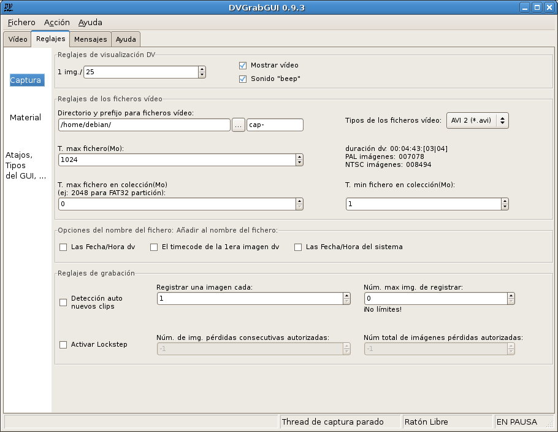

Pre: Referencias → Ventana Vídeo (modalidad "pequeña") --- ↑Home --- Sig: Referencias → Reglajes → Material
DVGrabGUI 0.9.4
Referencias → Reglajes → Captura
Este uñero lo permite ajustar los opciones sobre la captura. ¡Probablemente
lo más utilizado!

-
Reglajes de visualización DV:
Este grupo reúne los reglajes de visualización DV en la ventana vídeo:
-
1 img./
Mostrar una imagen cada n imágenes recibidas.
-
Mostrar vídeo
Para (des)activar esta visualización. Desactívelo si quiere
preservar sus baterías, o tiene problemas de "sigsev" (debería
tener los mismos si intenta utilizar la grabación en ficheros
"jpeg": hay problemas con su versión de "libdv").
-
Sonido "beep"
Para (des)activar el sonido "beep" durante la grabación.
-
Reglajes de los ficheros vídeo:
Este grupo reúne los mayores reglajes de ficheros vídeo.
-
Directorio y prefijo para ficheros vídeo
Para ajustar, primero el encaminador donde registrar los ficheros
vídeo, luego la primera parte del nombre de estos ficheros
(completado con una opcional valor de fecha/hora, un número y la
extensión de fichero, elegida con el control a la derecha).
El botón "…" abre una caja de diálogo para elegir el directorio
básico de los ficheros vídeo.
-
Tipos de los ficheros vídeo
Esta lista le permite elegir el formato de sus ficheros vídeo:
-
AVI 1 – AVI contenedor, no "openDML" (largos
ficheros) disponible, no doble-registrar de los datos audio;
-
AVI 2 – Elección en rebeldía. AVI contenedor,
con "openDML" (largos ficheros), pero doble-registrar de
los datos audio (pequeña pérdida de espacio…);
-
Raw (*.dv, *.dif) – Grabación del flujo dv
"tal cual", sin estar encapsulado en un contenedor;
-
Jpeg – Grabar el flujo dv como una secuencia de
imágenes jpeg. Anote que podría no ser presente, si
"libjpeg" no fue encontrada durante la compilación. También
mire que no debería intentar grabar cada imagen dv: más
vale grabar una imagen cada dos, o cada tres…
-
T. max fichero
La talla máxima de un fichero, en Mo. Si ajustado a "0", ¡no hay
límites!
-
Texto estático
Este texto de informaciones le muestra la duración de grabación,
y el número máximo de imágenes en PAL y NTSC, permitidos por el
reglaje precedente "T. max fichero" (varia con arreglo al formato
elegido – para imágenes Jpeg, es el peor
caso – ruido total – para la
definición normal: por lo general, podrá registrar por lo
menos tantas imágenes como con los otros formatos…).
-
T. max fichero en colección
Si >0, crea colecciones de ficheros de tal talla (en Mo). Útil si
quiere grabar esos ficheros sobre CDs (!), DVDs, o utiliza una
partición FAT, …
-
T. min fichero en collección
¡Para estar seguro de que no tendrá ficheros más pequeños que
este valor (en Mo) en su colección!
-
Opciones del nombre del fichero:
Aquí puede añadir a su nombre de fichero los datos de tiempo siguientes:
-
Las Fecha/Hora dv
Añadir las Fecha/Hora registradas sobre la casete dv.
-
El timecode de la 1era imagen dv
Añadir el timecode de la primera imagen grabada.
-
Las Fecha/Hora del sistema
Añadir las Fecha/Hora del OS cuando la grabación fue encendida.
-
Reglajes de grabación:
Más opciones para controlar la grabación.
-
Detección auto nuevos clips
Intentar crear un nuevo fichero cada nuevo clip dv (detectado
según los meta-datos del flujo dv, o discontinuidad en el
timecode).
-
Registrar una imagen cada
Registrar una imagen cada n imágenes recibidas.
-
Núm. max img. de registrar
El número máximo de imágenes registradas antes de parar la
captura. El texto debajo le da informaciones del tiempo
correspondiente en PAL (25fps) y NTSC (30fps). Si a "0", ¡no hay
límites!
¡Fíjese en que lo más corto entre este reglaje y el
"T. max fichero" gana!
-
Activar Lockstep
Active esto para parar la grabación dv si hay demasiadas imágenes
pérdidas (vea los dos reglajes debajo). Mire bien que DVGrabGUI
repite la última imagen completa recibida para reemplazar las
pérdidas…
-
Núm. de img. pérdidas consecutivas autorizadas
El número máximo de imágenes pérdidas consecutivas (no recibidas,
o incompletas) que DVGrabGUI reemplazará con la última correcta,
antes de parar la captura. Si a "-1", ¡no hay límites!
-
Núm. total de imágenes pérdidas autorizadas
Es el número máximo de imágenes pérdidas autorizadas durante una
grabación, antes de que DVGrabGUI pare la captura. Como más
arriba, si a "-1", ¡no hay límites!
Pre: Referencias → Ventana Vídeo (modalidad "pequeña") --- ↑Home --- Sig: Referencias → Reglajes → Material
(c) 2006, 2007, 2008 Bastien Montagne (montagne29 en wanadoo punto fr).
Proyecto albergado en sourceforge.net/projects/dvgrabgui.